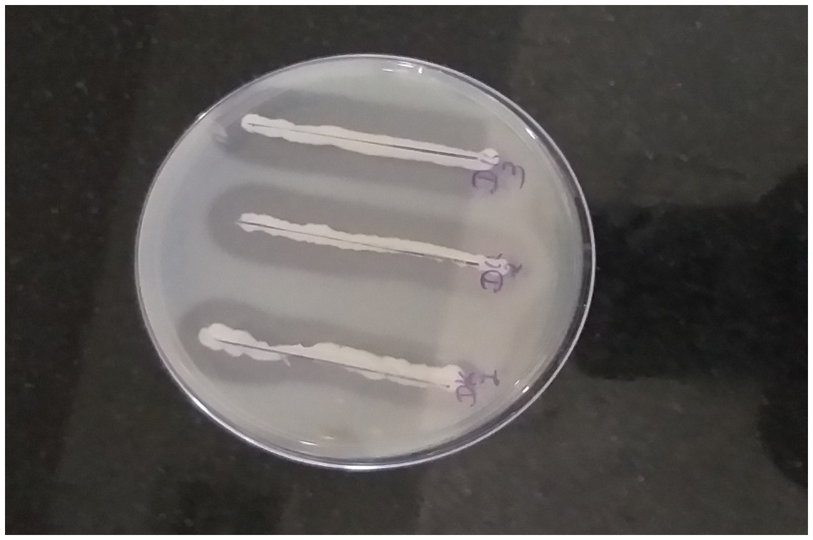
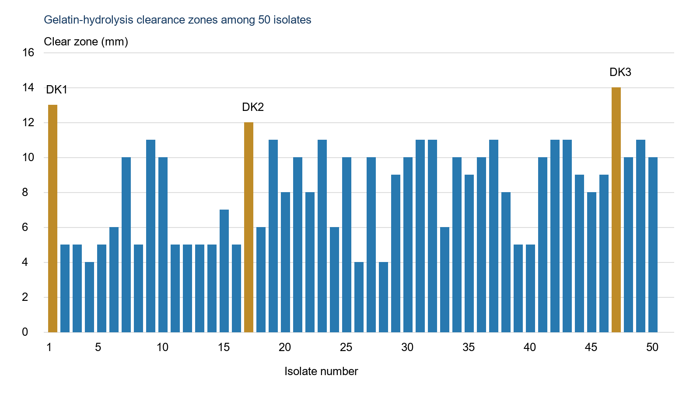
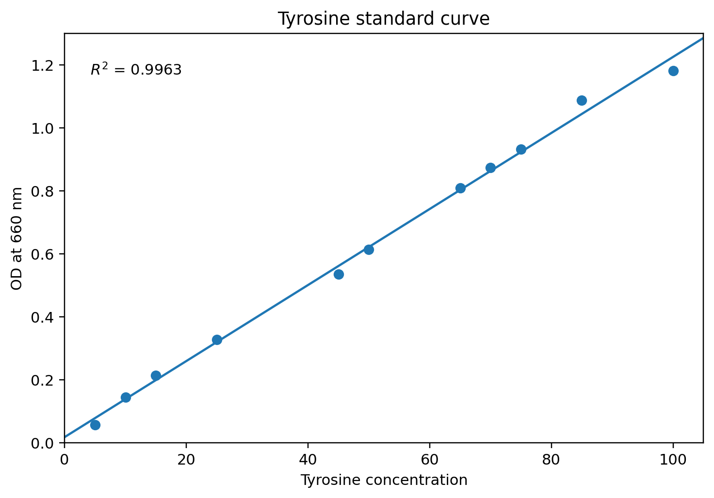
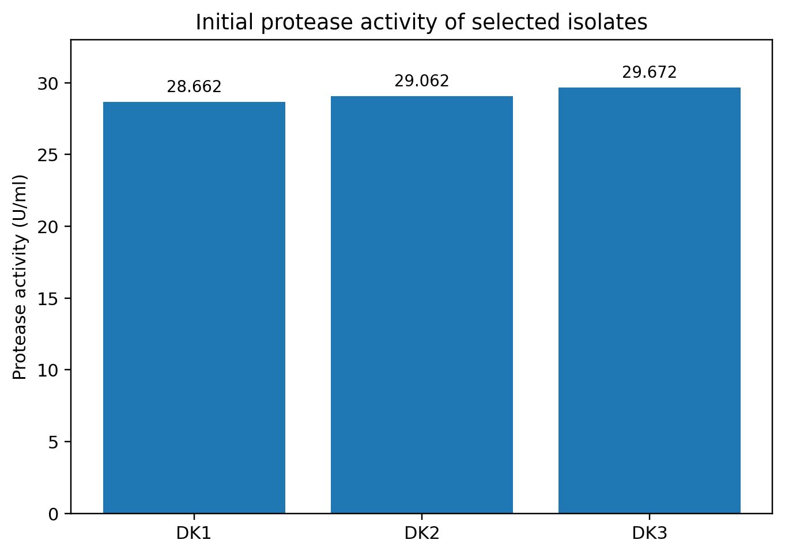
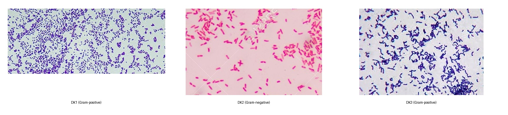
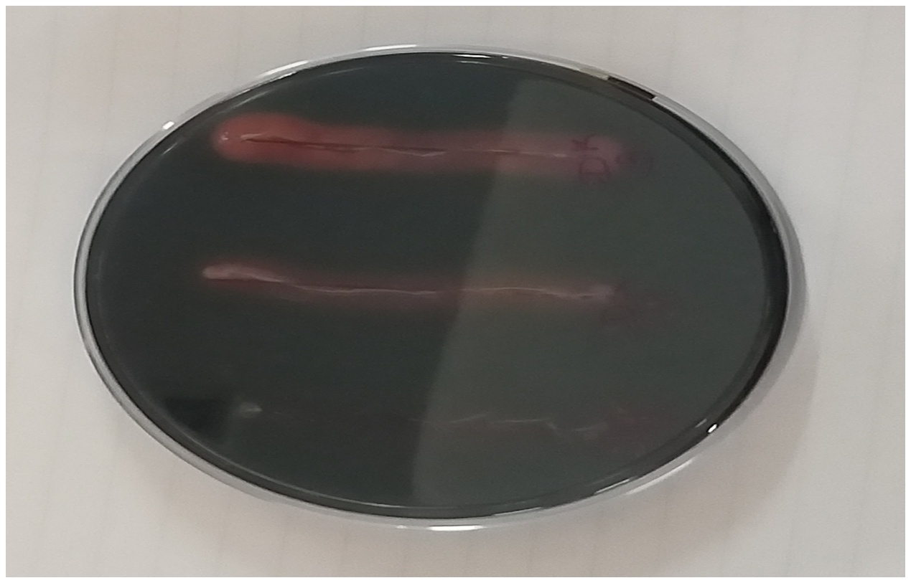
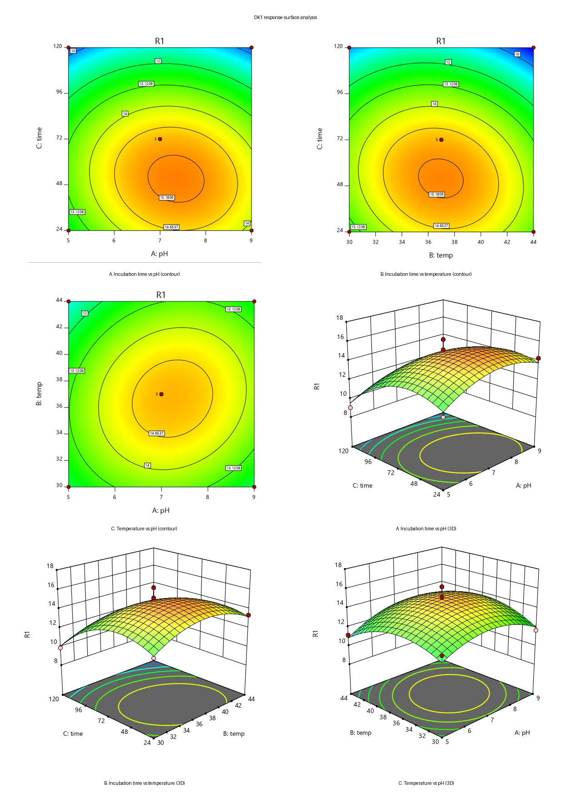
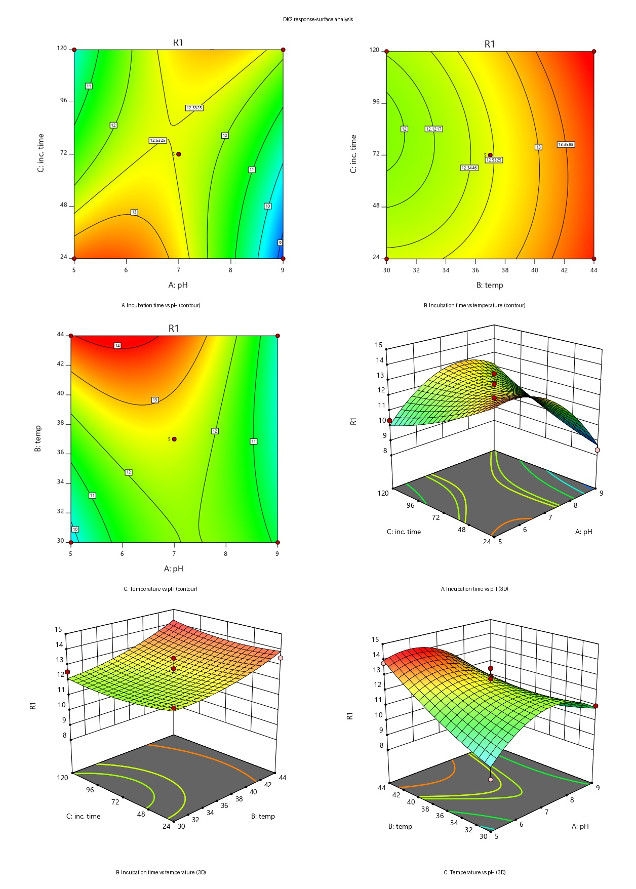
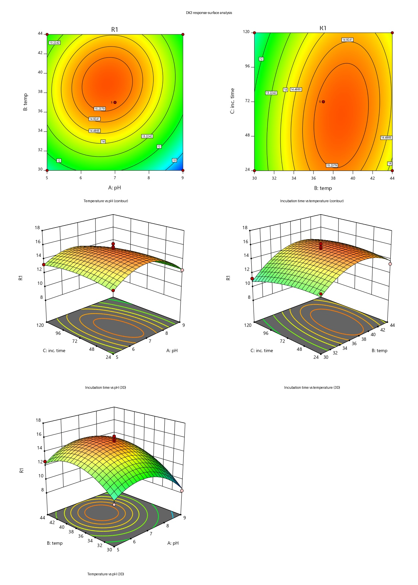

Am J Res Innov. 2026;1(1) · Research Article · Open Access
Proteases are important hydrolytic enzymes with broad applications in pharmaceutical, medical, food, detergent, leather, and other industrial processes. The present study focused on the isolation, screening, and optimization of protease-producing bacterial strains for enhanced enzyme production. Soil samples were collected and screened for proteolytic activity using gelatin agar as a selective screening medium. Among the bacterial isolates obtained, three promising strains, designated DK1, DK2, and DK3, demonstrated significant proteolytic activity based on clear-zone formation. Protease production was further evaluated under different cultivation conditions to identify factors influencing enzyme yield. Optimization studies were performed by investigating key parameters, including pH, temperature, and incubation time. A Box–Behnken experimental design was applied to evaluate the combined effects of these variables and determine conditions that favored maximum protease production. The optimized conditions resulted in improved enzyme production compared with the initial cultivation conditions. The findings demonstrate the potential of the selected bacterial isolates as sources of extracellular protease and provide useful information for optimizing microbial enzyme production. The study may contribute to the development of efficient and economical approaches for producing proteases with potential applications in pharmaceutical and other industrial processes.
.Keywords: protease; bacteria; soil isolates; casein-TCA assay; Box-Behnken design; response surface methodology; enzyme optimization
Proteases are enzymes that catalyze the hydrolysis of peptide bonds and convert proteins into smaller peptides and amino acids. Because of this function, proteases participate in many biological processes and are also among the most commercially important groups of enzymes. Microbial proteases are particularly attractive for biotechnology because microorganisms can be cultivated rapidly, require relatively limited space, can be manipulated genetically, and provide broad biochemical diversity. (Kumari et al., 2012).Bacterial proteases have therefore been widely investigated for industrial applications, especially in food processing, detergents, leather treatment, pharmaceuticals, chemical processing, textiles, and management of protein-rich wastes. (Gupta, et al; 2002a; Genckal, 2004; Ikram, 2008; Nadeem, 2009; Ray, 2012).
Protease production is influenced by environmental and culture variables such as pH, temperature, and incubation time. These factors may interact with one another, so changing a single factor at a time does not always reveal the most favorable combination of conditions. Response surface methodology offers a statistical approach for evaluating several factors simultaneously. The Box-Behnken design (BBD), in particular, can be used to fit a quadratic model, assess factor interactions, and estimate conditions that maximize a measured response.
The objective of this study was to isolate protease-producing bacteria from soil, screen the isolates for proteolytic activity, characterize the most active isolates by Gram staining and colony morphology, assess amylase production, and optimize protease production using a three-factor Box-Behnken design involving pH, temperature, and incubation time.
One gram of each collected sample was suspended with nine ml of the normal saline (0.85% NaCl). From the sample, 1 ml of supernant was serially diluted up to 10-6 dilution separately using sterile normal saline solution.
From the each of the dilution 10-3 to 10-6, 100µl was drawn and spread on the Luria –Bertani (LB) agar (HiMedia) medium with 1% Gelatin. The plates were incubated at 37˚C for 24 hr, after 24 hr different types of bacterial colonies will be seen. Add acidic HgCl2 in the plates, clear zone of gelatin hydrolysis was noted for each plate. After measuring the mean diameter of clear zone of hydrolysis, top three positive isolates with wider zone were taken for further studies.
To prepare the standard curve of tyrosine, there are used 0.5M Na2CO3, 50mM of Sodium phosphate buffer, diluted 1N Folin reagent and 10 mg/ml of tyrosine stock solution were used. A required amount of buffer and tyrosine were added in each tube except blank. Then 2.5 ml of Na2CO3 was added in each tubes including blank. After these add 0.5 ml of 1N Folin reagent in each tubes including blank, the solution was mixed immediately and kept for 30 min at room temperature. Finally, the Optical Density (OD) was measured at 660nm using spectrophotometer and the standard Curve was plotted..
For the casein-TCA protease assay, The selected isolates were inoculated into the LB Broth medium and incubate at 37˚C. The culture broth was centrifuged at 10000 rpm for 15 min at 4˚C. Protease activity was determining using casein as a substrate. The reaction mixture contained total volume of 2 ml which in turn composed of 1ml of 1% casein in 50mM sodium phosphate buffer and 1 ml enzyme solution. After the 20 min of incubation at 37˚C add 2 ml of 10% TCA (trichloroacetic acid) and again incubate at 37˚C for 20 min. after the incubation the solution will be transferred in the falcon tubes and centrifuge at 7000 rpm for 20 min. 0.5 ml of clear supernant was mixed with the 2.5 ml of 0.5M Na2CO3 and 0.5 ml of 1N Folin reagent. After incubation of 20 min at 37˚C, absorbance was measured at 660nm against a reagent blank. The process was carried out in triplicates. One unit of protease activity was defined as amount of enzyme that releases 1 µg amino acid equivalent to tyrosine per min under the standard assay conditions (Hema and Shiny, 2012, Sevinc and Demirkan, 2011).
.
The three selected isolates were examined by Gram staining. Smears were air-dried, heat-fixed, stained with crystal violet, treated with Gram's iodine, decolorized with 95% ethanol, and counterstained with safranin. Slides were examined microscopically under the 100× objective. Purple cells were recorded as Gram-positive and pink or red cells as Gram-negative.
Colony characteristics were observed from fresh cultures grown on LB agar. Pigmentation, form, margin, elevation, texture, and size were recorded..
The isolated top 3 strains were overnight grown and pinch upon the starch agar plate (LB agar + 2% starch). The plates were then incubated for 24hr and flooded with freshly prepared iodine solution. Formation of zone of clearance around the colonies was observed
A three-factor, three-level Box-Behnken design was used to investigate the effects of medium pH, temperature, and incubation time on protease activity. The central values were pH 7, 37°C, and 24 h. Protease activity (U/ml) was treated as the response variable, and a second-order quadratic polynomial model was fitted. Analysis of variance (ANOVA) and the F-test were used to evaluate model significance at a 95% confidence level. Model quality was assessed by the coefficient of determination (R²). Three-dimensional response surfaces and two-dimensional contour plots were generated using Design-Expert software, and optimum conditions were estimated through the software's desirability function and response-surface analysis.
| Runs | Factors | Factors | Factors | Response: Protease activity(U/ml) | Response: Protease activity(U/ml) | Response: Protease activity(U/ml) |
|---|---|---|---|---|---|---|
| Runs | X1 | X2 | X3 | DK1 | DK2 | DK3 |
| 1 | 0 | 0 | 0 | 14.232 | 11.919 | 15.552 |
| 2 | 0 | 0 | 0 | 16.213 | 11.886 | 15.734 |
| 3 | -1 | -1 | 0 | 12.695 | 8.495 | 10.367 |
| 4 | 0 | -1 | -1 | 12.547 | 12.398 | 12.728 |
| 5 | 0 | 1 | 1 | 8.947 | 10.631 | 13.571 |
| 6 | -1 | 0 | 1 | 9.012 | 10.367 | 13.240 |
| 7 | 0 | 0 | 0 | 15.157 | 12.068 | 16.180 |
| 8 | 0 | 1 | -1 | 13.372 | 13.471 | 13.339 |
| 9 | -1 | 1 | 0 | 11.160 | 12.613 | 12.613 |
| 10 | 0 | 0 | 0 | 14.430 | 13.455 | 14.793 |
| 11 | 0 | -1 | 1 | 9.871 | 12.563 | 11.225 |
| 12 | -1 | 0 | -1 | 11.869 | 14.066 | 13.174 |
| 13 | 0 | 0 | 0 | 14.480 | 12.778 | 14.607 |
| 14 | 1 | 0 | -1 | 14.281 | 8.368 | 12.447 |
| 15 | 1 | 1 | 0 | 11.704 | 10.928 | 12.431 |
| 16 | 1 | 0 | 1 | 10.053 | 11.638 | 10.928 |
| 17 | 1 | -1 | 0 | 11.671 | 10.994 | 8.319 |
Table 2. Factors and levels used in the Box-Behnken design
| Variable | −1 | 0 | +1 |
|---|---|---|---|
| pH | 5 | 7 | 9 |
| Temperature (°C) | 30 | 37 | 44 |
| Incubation time (h) | 24 | 72 | 120 |
Fifty bacterial isolates showing gelatin hydrolysis were recovered from the soil samples. Based on the size of the clearance zone, three isolates were selected for detailed study and designated DK1, DK2, and DK3. Their zones of inhibition were 13 mm, 12 mm, and 14 mm, respectively, with DK3 producing the largest zone. The gelatin-hydrolysis plate and the distribution of clearance zones are shown in Figures 1 and 2.


Table 3. Screening and initial protease activity of the three selected isolates
| Isolate | Gelatin clearance zone (mm) | Protease activity (U/ml) |
|---|---|---|
| DK1 | 13 | 28.662 |
| DK2 | 12 | 29.062 |
| DK3 | 14 | 29.672 |
The tyrosine standard curve showed a strong linear relationship, with an R² value of 0.9963. Using the casein-TCA assay and this standard curve, the initial protease activities of DK1, DK2, and DK3 were calculated as 28.662, 29.062, and 29.672 U/ml, respectively. DK3 therefore showed the highest measured protease activity among the three selected isolates. The standard curve and the comparative protease activities are presented in Figures 3 and 4.


Gram staining showed that DK1 and DK3 retained the primary crystal violet stain and were Gram-positive, whereas DK2 appeared pink after counterstaining and was Gram-negative. All three isolates formed large colonies. DK1 was white, circular, entire, raised, and butyrous; DK2 was off-white, circular, entire, convex, and viscid; and DK3 was buff-colored, irregular, entire, flat, and viscid. In the starch hydrolysis test, clear zones were observed for DK2 and DK3, indicating that these two isolates also produced amylase. Representative Gram-stained fields and the amylase-screening plate are shown in Figures 5 and 6.


Table 4. Morphological characteristics of selected protease-producing isolates
| Characteristic | DK1 | DK2 | DK3 |
|---|---|---|---|
| Pigmentation | White | Off-white | Buff |
| Form | Circular | Circular | Irregular |
| Margin | Entire | Entire | Entire |
| Elevation | Raised | Convex | Flat |
| Texture | Butyrous | Viscid | Viscid |
| Size | Large | Large | Large |
The Box-Behnken experiments demonstrated that protease activity varied with pH, temperature, and incubation time and that the factors interacted with one another. The fitted quadratic models were statistically significant for all three isolates. For DK1, the regression model had an F value of 11.61, p = 0.0019, and R² = 0.9372. For DK2, the F value was 7.52, p = 0.0072, and R² = 0.9063. For DK3, the model produced an F value of 15.31, p = 0.0008, and R² = 0.9513. These R² values indicate that the models accounted for a high proportion of the observed variation in protease activity.
Table 5. ANOVA statistics for the Box-Behnken models
| Isolate | Source | SS | df | Mean square | F | p value / R² |
|---|---|---|---|---|---|---|
| DK1 | Regression | 71.82 | 9 | 7.98 | 11.61 | 0.0019 / 0.9372 |
| DK1 | Residual | 4.81 | 7 | 0.68 | — | — |
| DK2 | Regression | 40.80 | 9 | 4.53 | 7.52 | 0.0072 / 0.9063 |
| DK2 | Residual | 4.22 | 7 | 0.6026 | — | — |
| DK3 | Regression | 64.15 | 9 | 7.13 | 15.31 | 0.0008 / 0.9513 |
| DK3 | Residual | 3.26 | 7 | 0.4655 | — | — |
Response-surface analysis indicated isolate-specific regions of high protease activity. For DK1, the favorable region was approximately pH 7.0–7.4 and 36–40°C, with an incubation period around 50–55 h. For DK2, the favorable region was pH 5.8–6.0 and 43–45°C, with approximately 24–43 h incubation. DK3 showed a favorable region around pH 6.5–7.0 and 35–40°C, with approximately 57–62 h incubation. The optimized point estimates generated by the design were 36°C, pH 7.2, and 51 h for DK1; 43°C, pH 5.9, and 24 h for DK2; and 38°C, pH 6.7, and 62 h for DK3. The corresponding Box-Behnken contour and three-dimensional response-surface plots are shown in Figures 7–9.
Table 5. Optimized protease-production conditions predicted by Box-Behnken design
| Isolate | Temperature (°C) | pH | Incubation time (h) |
|---|---|---|---|
| DK1 | 36 | 7.2 | 51 |
| DK2 | 43 | 5.9 | 24 |
| DK3 | 38 | 6.7 | 62 |



The screening approach based on gelatin hydrolysis successfully identified a comparatively small subset of high-performing isolates from a larger soil bacterial population. Selection of DK1, DK2, and DK3 on the basis of clear-zone formation was supported by quantitative protease assays, in which all three isolates produced measurable extracellular protease activity close to 29 U/ml. DK3 had both the largest gelatin clearance zone and the highest initial protease activity, suggesting that the plate-screening result was useful for identifying a strong candidate for further optimization.
The phenotypic results also showed that protease production was not limited to a single Gram-reaction type. DK1 and DK3 were Gram-positive, while DK2 was Gram-negative. The positive amylase tests for DK2 and DK3 indicate that these isolates may have broader hydrolytic capabilities in addition to protease production. Such multi-enzyme activity can be relevant in biological processing systems in which mixtures of proteins and carbohydrates are present. However, the present study measured amylase only qualitatively by starch clearance, so the magnitude and industrial relevance of amylase production remain to be quantified.
The optimization study showed that the best production conditions differed markedly among isolates. DK1 favored near-neutral conditions, DK2 favored a mildly acidic pH combined with the highest temperature among the three optima, and DK3 favored a slightly acidic-to-neutral pH with an intermediate temperature. Incubation time also differed substantially, from 24 h for DK2 to 62 h for DK3. These differences demonstrate why isolate-specific optimization is necessary rather than assuming that one set of culture conditions is suitable for all protease-producing bacteria.
The statistical models were significant and explained approximately 91–95% of the variability in protease activity. The highest R² and F value were obtained for DK3, supporting a particularly strong fit of the quadratic model for that isolate. The curved response surfaces reported in the thesis indicate interactive effects among pH, temperature, and incubation time. Thus, the Box-Behnken design provided more information than a sequence of single-factor experiments by simultaneously describing the combined effects of the production variables.
From an application perspective, proteases are relevant to many industries because they hydrolyze protein substrates under controlled conditions. Microbial proteases in food and feed processing, dairy and baking, detergent formulations, leather treatment, pharmaceutical applications, silver recovery from photographic films, chemical synthesis, textiles, and treatment of proteinaceous waste. The three isolates studied here therefore represent potential starting material for further characterization. Before industrial use, however, additional work would be required to identify the organisms, confirm the optimized conditions experimentally, determine enzyme stability and substrate specificity, evaluate production scale-up, and assess safety.
Protease-producing bacteria were successfully isolated from soil, and three isolates—DK1, DK2, and DK3—were selected on the basis of gelatin hydrolysis and protease activity. DK3 showed the highest initial protease activity (29.672 U/ml), while DK1 and DK3 were Gram-positive and DK2 was Gram-negative. DK2 and DK3 also produced amylase. Box-Behnken response surface analysis demonstrated significant effects and interactions of pH, temperature, and incubation time on protease production. The optimized conditions were 36°C, pH 7.2, and 51 h for DK1; 43°C, pH 5.9, and 24 h for DK2; and 38°C, pH 6.7, and 62 h for DK3. The significant regression models and high R² values support the usefulness of the Box-Behnken approach for optimizing protease production.
Sumantha, A., Larroche, C. and Pandey, A., 2006. Microbiology and industrial biotechnology of food-grade proteases: a perspective. Food Technology and Biotechnology, 44(2), p.211.
Kaur, I., 2011. BIOCHEMICAL AND MOLECULAR CHARACTERIZATION OF ALKALINE PROTEASE OF BACILLUS CIRCULANS MTCC 7906 (Doctoral dissertation, PAU Ludhiana).
Rao, M.B., Tanksale, A.M., Ghatge, M.S. and Deshpande, V.V., 1998. Molecular and biotechnological aspects of microbial proteases. Microbiol. Mol. Biol. Rev., 62(3), pp.597-635.
Andualem, B. and Miesho, H., 2015. Protease Production from Bacterial Isolates of Traditional Leather Processing Ponds found Around Gondar Town (Doctoral dissertation, Haramaya University).
Kebede, A. and Yimer, D., 2014. Production and Characterization of Bacterial Protease from Isolates of Soil and Agro-Industrial Wastes (Doctoral dissertation, Haramaya University).
Deák, T. and Farkas, J., 2013. Microbiology of thermally preserved foods: canning and novel physical methods. DEStech Publications, Inc.
Rao, M.B., Tanksale, A.M., Ghatge, M.S. and Deshpande, V.V., 1998. Molecular and biotechnological aspects of microbial proteases. Microbiol. Mol. Biol. Rev., 62(3), pp.597-635.
Mehta, A., 2010. Microbial proteases and their applications. Industrial Exploitation of Microorganisms. Maheshwari DK, Dubey RC, Sarvanamurthu R (eds). IK International Publishing House Pvt. Ltd., New Delhi, India, pp.199-226.
Hamza, T.A. and Azmach, N.N., Studies on Protease Producing Bacterial Biodiversity from Soil Collected from Arba Minch University, Abaya Campus, Southern Ethiopia.
Jewell, S.N., 2000. Purification and characterization of a novel protease form< i> Burkholderia< i> strain 2.2 N (Doctoral dissertation, Virginia Tech).
Jogdand, K., Surywanshi, D., Munde, T. and Kate, S., Screening Of Protease Producer from Soil & Its Application As A Bioclenar.
Khan, M.A., Ahmad, N., Zafar, A.U., Nasir, I.A. and Qadir, M.A., 2011. Isolation and screening of alkaline protease producing bacteria and physio-chemical characterization of the enzyme. African Journal of Biotechnology, 10(33), pp.6203-6212.
Rupali, D., 2015. Screening and isolation of protease producing bacteria from soil collected from different areas of Burhanpur Region (MP) India. Int. J. Curr. Microbiol. Appl. Sci, 4, pp.597-606.
VG, V.P., Preethi, S., Karthikeyan, S. and NG, R.B., 2016. ISOLATION AND IDENTIFICATION OF PROTEASE PRODUCING BACTERIA FROM SOIL.
Hamza, T.A. and Letebo, A., Isolation and Screening of Protease Producing Bacteria from Local Habitat for Polyester Recovery from Waste Photographic Films.
Manorma, K., Sharma, S., Singla, H., Kaundal, K. and Kaur, M., 2017. Screening and Isolation of Protease Producing Bacteria from Rhizospheric Soil of Apple Orchards from Shimla District (HP), India. Int. J. Curr. Microbiol. App. Sci, 6(5), pp.249-255.
Vijayalakshmi, T.M. and Murali, R., 2015. Isolation and screening of Bacillus subtilis isolated from the dairy effluent for the production of protease. International Journal of Current Microbiology and Applied Sciences, 4(12), pp.820-827.
Pokhrel, B., Pandeya, A., Gurung, S., Bista, G., Kandel, S., Kandel, R.C. and Magar, R.T., 2014. Screening and optimization of extra cellular protease from bacteria isolated from sewage. European Journal of Biotechnology and Bioscience, 2(1), pp.46-49.
Sharma, A.K., Sharma, V., Saxena, J., Yadav, B., Alam, A. and Prakash, A., 2015. Isolation and screening of extracellular protease enzyme from bacterial and fungal isolates of soil. Int J Sci Res Environ Sci, 3, pp.0334-0340.
Malathi, S. and Chakraborty, R., 1991. Production of alkaline protease by a new Aspergillus flavus isolate under solid-substrate fermentation conditions for use as a depilation agent. Appl. Environ. Microbiol., 57(3), pp.712-716.
Volume 1, Issue 1 is open for submissions across all article types and disciplines within AJRI's scope.